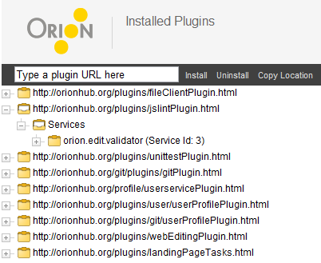

The Plugins page allows you to view and change the plugins that you have installed. Some plugins are already installed by default, and if you attempt to uninstall them they will be added back automatically. If you are a plugin developer, you can also use this page to browse through the services and properties of installed plugins.

To install a plugin, simply paste the URL of the plugin into the text area, and click Install.
This document is maintained in a collaborative wiki. If you wish to update or modify this document please visit http://wiki.eclipse.org/Orion/Documentation/User_Guide/Reference/Plugins_page